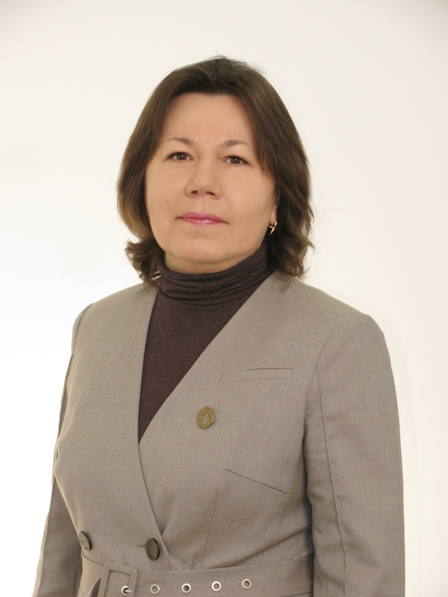

Асадчая Светлана Яковлевна
Адвокат по гражданским и уголовным делам
Многолетний опыт работы в этой сфере
более 500 успешно завершенных дел

Обо мне
Асадчая Светлана Яковлевна адвокат юридической консультации Железнодорожного района г.Гомеля. Член Гомельской областной коллегии адвокатов. Опыт в адвокатской деятельности с 1997 г. С 2013 года – заведующая юридической консультацией Железнодорожного района г.Гомеля. Оказываю юридическую помощь как гражданам, так субъектам хозяйствования (юридическим лицам, индивидуальным предпринимателям).
Основной принцип моей работы - это добросовестность в выполнении поручения в интересах клиента.
Оказываемая юридическая помощь:
консультации по правовым вопросам
составление документов правового характера: заявления, иски, жалобы, ходатайства, претензии, запросы и прочее
участие по уголовным делам в качестве защитника, представителя потерпевшего, представителя гражданского истца, представителя гражданского ответчика на стадии предварительного следствия и во всех судебных инстанциях
участие по гражданским делам в качестве представителя истца, представителя ответчика, представителя третьего лица, представителя заявителя, представителя других юридически заинтересованных в исходе дела лиц во всех судебных инстанциях
участие по делам об административных правонарушениях в качестве защитника, представителя потерпевшего, представителя юридического лица
участие в качестве представителя взыскателя, представителя должника в исполнительном производстве
представление интересов заявителя в государственных органах и в других организациях
Для консультации вы можете связаться со мной

+375 29 6429317
e-mail: asadchayas@mail.ru
График работы: пн-пт: 09.00-17.00